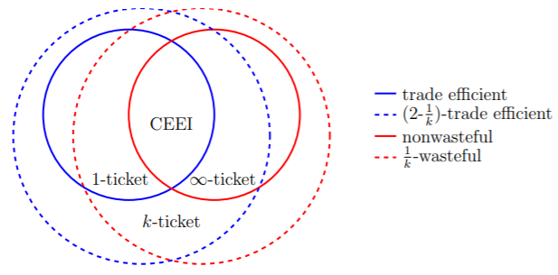
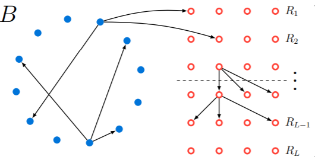
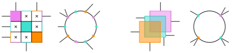
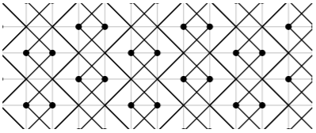

About Me
I'm an Assistant Professor in the Department of Computer Science at Harvey Mudd College. In 2024, I completed a PhD in the Theory of Computation Group at Columbia University, advised by Rocco Servedio and Xi Chen.
I'm interested in efficient algorithms, chance, and the ways in which analytic thinking can solve everyday problems. My non-research interests include trail running, reading, and exploring the natural world.
Things I'm actively thinking about:
- Faster exact and parameterized algorithms for algorithmic problems on integer sets
- Applications of additive structure in algorithms
- Adapting innovative teaching and grading practices to the domain of theoretical computer science
Interested in pursuing a PhD in (theoretical) computer science? Here's a talk (slides) I gave for Columbia's Demystifying the Dissertation series on the experience of doing research in theory and PhD life more generally, and here's one (slides) from a later iteration of the series that discusses the application process in a little more detail. If you're ready to explore the possibilities of a PhD in CS, here's some advice on considering and applying to grad school that I wrote shortly after deciding to join Columbia.
If you'd like to chat, please email me at the address at the bottom of the page. I'll do my best to answer if time permits.
Research Lab
Publications
-
Peer-to-Peer Tutorials in Algorithms: Reflections on Scaling Up Interactive Presentation-Based Learning.
We report on our experiences implementing a novel “peer-to-peer tutorial” teaching model in an upper-division undergraduate algorithms seminar.
The traditional tutorial model offers students intensive practice in collaborative problem-solving, presentation, and critical discussion, as well as rich in-person feedback. However, because the model is extremely time-intensive for the instructor, it does not scale beyond 8-10 students. In our “peer-to-peer” modification, each week contains two complementary topic tracks. In class, student pairs from each topic track present to pairs from the other topic track under the guidance of the instructor. Our experience suggests that the tutorial can be adapted to upper-division courses of 16-24 students or more without sacrificing its pedagogical benefits.
In this experience report, we describe the structure and context of the course and present pre- and post-course surveys in which students report increased confidence in communication, presentation, and independent learning. We then reflect on lessons learned, including cultivating a sense of intellectual ownership among students, the benefits of presenting to very small audiences, and the pros and cons of enabling different students to have different learning experiences. We conclude with guiding principles for instructors designing courses that prioritize self-directed learning, close collaboration and presentation skills.
-
Beating Meet-in-the-Middle for Subset Balancing Problems. arXiv version
We consider exact algorithms for Subset Balancing, a family of related problems that generalizes Subset Sum, Partition, and Equal Subset Sum. Specifically, given as input an integer vector \(\vec{x} \in \mathbb{Z}^n\) and a constant-sized coefficient set \(C \subset \mathbb{Z}\), we seek a solution vector \(\vec{c} \in C^n\), \(\vec{c} \neq \vec{0}\) satisfying \(\vec{c} \cdot \vec{x} = 0\).
For \(C = \{-d,\ldots,d\}\), \(d > 1\) and \(C = \{-d,\ldots,d\}\setminus\{0\}\), \(d > 2\), we present algorithms that run in time \(O(|C|^{(0.5 - \epsilon)n})\) for a constant \(\epsilon > 0\) that depends only on \(C\). These are the first algorithms that break the \(O(|C|^{n/2})\)-time "Meet-in-the-Middle barrier" for these coefficient sets in the worst-case. This improves on the result of Chen, Jin, Randolph and Servedio (SODA 2022), who broke the Meet-in-the-Middle barrier on these coefficient sets in the average-case setting. Additionally, our techniques allow us to improve the best exact algorithm for Equal Subset Sum (Subset Balancing with \(C = \{-1,0,1\}\)), due to Mucha, Nederlof, Pawlewicz and Węgrzycki (ESA 2019), by an exponential margin. Our results leave two major coefficient sets for which we cannot yet break the Meet-in-the-Middle barrier: \(C = \{-2, -1, 1, 2\}\) and \(C = \{-1, 1\}\) (Subset Sum).
-
Surveying Theory of Computation Education in the United States. PDF via EATCS
We summarize the results of a 2024 survey of theory of computing (ToC) courses that received responses from 166 institutions of higher education in the United States. Although our survey is far from comprehensive, it provides new information on many aspects of ToC in U.S. bachelor's degree programs in computer science. We report on the most frequently covered topics in ToC courses as well as structural features such as typical prerequisites, section sizes, teaching modalities, and course staff.
In addition to summarizing survey results, we briefly discuss observed trends, suggest opportunities for future teaching and research, and conclude with a call for increased collaboration between American and European theoretical computer science educators.
-
Testing Sumsets is Hard. arXiv version
A subset S of the Boolean hypercube \(\mathbb{F}^n_2\) is a sumset if \( S=\{a+b:a,b \in A\}\) for some \(A \in \mathbb{F}^n_2\). Sumsets are central objects of study in additive combinatorics, featuring in several influential results. We prove a lower bound of \( \Omega(2^{n/2}) \) for the number of queries needed to test whether a Boolean function \( f : \mathbb{F}^n_2 \rightarrow \{0,1\} \) is the indicator function of a sumset. Our lower bound for testing sumsets follows from sharp bounds on the related problem of shift testing, which may be of independent interest. We also give a near-optimal \(2^{n/2} \cdot poly(n)\)-query algorithm for a smoothed analysis formulation of the sumset refutation problem.
-
A Survey of Undergraduate Theory of Computing Curricula. ACM DL PDF
Theory of Computing (ToC) is an important aspect of nearly every undergraduate CS curriculum, as it concerns what computation fundamentally means. However, there has been little research into ToC pedagogy, both within the classroom and how it fits within its institutional context. We propose in this working group to create a survey of current ToC pedagogy. Our goals are to create a standard for teaching ToC, find trends, determine under-researched areas, and to build a community among ToC educators.
-
Parameterized Algorithms on Integer Sets with Small Doubling: Freiman’s Theorem, Subset Sum and k-Sum. arXiv version
We study the parameterized complexity of algorithmic problems whose input is an integer set A in terms of the doubling constant \(C:=|A+A|/|A|\), a fundamental measure of additive structure. We present evidence that this new parameterization is algorithmically useful in the form of new results for two difficult, well-studied problems: Integer Programming and Subset Sum.
First, we show that determining the feasibility of bounded Integer Programs is a tractable problem when parameterized in the doubling constant. Specifically, we prove that the feasibility of an integer program I with n polynomially-bounded variables and m constraints can be determined in time \(n^{O_C(1)} poly(|I|)\) when the column set of the constraint matrix has doubling constant C.
Second, we show that the Subset Sum and Unbounded Subset Sum problems can be solved in time \(n^{O_C(1)}\) and \(n^{O_C(\log \log \log n)}\), respectively, where the \(O_C\) notation hides functions that depend only on the doubling constant C. We also show the equivalence of achieving an FPT algorithm for Subset Sum with bounded doubling and achieving a milestone result for the parameterized complexity of Box ILP. Finally, we design near-linear time algorithms for k-SUM as well as tight lower bounds for 4-SUM and nearly tight lower bounds for k-SUM, under the k-SUM conjecture. Several of our results rely on a new proof that Freiman's Theorem, a central result in additive combinatorics, can be made efficiently constructive.
-
Exact and Parameterized Algorithms for Subset Sum Problems. PDF
We present a variety of exact and parameterized algorithms for Subset Sum and other related problems. The major contributions of this thesis include:
- 1. Average-case algorithms for Generalized Subset Sum, the problem that generalizes both Subset Sum and Equal Subset Sum, as well as structural results describing the parameter regime in which solutions exist. These results extend the application of the "Representation Method" and are the fastest known in this setting.
- 2. A proof that Either-Or Subset Sum, the problem of solving either Subset Sum or Equal Subset Sum, can be solved exponentially faster than time \(2^{0.5n}\) in the worst case. In our view, this result illustrates the potential of the "structure vs. randomness" approach for Subset Sum.
- 3. Algorithms that solve worst-case Subset Sum faster than time \(2^{0.5n}\) by a polynomial factor. These improvements on the best known exact algorithms for Subset Sum represent the successful application of "log shaving" techniques to the problem.
- 4. Algorithms for Subset Sum and \(k\)-SUM with constant doubling. When considered in terms of a novel parameterization in the doubling constant, Subset Sum admits an XP-algorithm, while \(k\)-SUM is Fixed-Parameter Tractable. We also show that Subset Sum is FPT in the doubling constant if and only if an instance \(\mathcal{I}\) of Hyperplane-Constrained Integer Linear Programming with \(n\) variables, \(m\) constraints, and constraint matrix entries bounded by \(\Delta\) can be solved in time \(\Delta^{O(m)} \cdot poly(|\mathcal{I}|)\).
-
Participatory Governance in the Computer Science Theory Classroom. ACM Digital Library
We implemented pedagogical strategies designed to give students greater control over the use of class time and grading methods in a major-required computer science theory (CST) course. Our methodology addresses the challenges inherent in transferring more power to students in a lecture-based class with a curriculum that requires the sequential mastery of formal mathematical concepts.
We offered students increased control over four classroom variables: the degree of interactivity, the selection of in-class activities , increased emphasis on standards-based outcomes as opposed to averaging over all coursework, and the granularity of the grading schema used by TAs. In this experience report, we present our methodology, report on our classroom experience, and conclude that increasing student control over the undergraduate CST classroom via participatory governance can increase student motivation and encourage critical reflection in budding computer scientists.
- Exact Algorithms for Finding Sumsets. PDF
-
Subset Sum in time \(2^{n/2} / poly(n)\). arXiv version
A major goal in the area of exact exponential algorithms is to give an algorithm for the (worst-case) n-input Subset Sum problem that runs in time \(2^{(1/2−c)n}\) for some constant \(c>0\). In this paper we give a Subset Sum algorithm with worst-case running time \(O(2^{n/2⋅n−γ})\) for a constant \(γ>0.5023\) in standard word RAM or circuit RAM models. To the best of our knowledge, this is the first improvement on the classical "meet-in-the-middle" algorithm for worst-case Subset Sum, due to Horowitz and Sahni, which can be implemented in time \(O(2^{n/2})\) in these memory models.
Our algorithm combines a number of different techniques, including the "representation method" introduced by Howgrave-Graham and Joux and subsequent adaptations of the method in Austrin, Kaski, Koivisto, and Nederlof, and Nederlof and Wegrzycki, and "bit-packing" techniques used in the work of Baran, Demaine, and Patrascu on subquadratic algorithms for 3SUM.
-
Average-Case Subset Balancing Problems. arXiv version
Given a set of \(n\) input integers, the Equal Subset Sum problem asks us to find two distinct subsets with the same sum. In this paper we present an algorithm that runs in time \(O^*(3^{0.387n})\) in the average case, significantly improving over the \(O^*(3^{0.488n})\) running time of the best known worst-case algorithm and the Meet-in-the-Middle benchmark of \(O^*(3^{0.5n})\).
Our algorithm generalizes to a number of related problems, such as the Generalized Equal Subset Sum problem, which asks us to assign a coefficient \(c_i\) from a set \(C\) to each input number \(x_i\) such that \(\sum_{i} c_i x_i = 0\). Our algorithm for the average-case version of this problem runs in time \(|C|^{(0.5-c_0/|C|)n}\) for some positive constant \(c_0\), whenever \(C=\{0, \pm 1, \dots, \pm d\}\) or \(\{\pm 1, \dots, \pm d\}\) for some positive integer \(d\) (with \(O^*(|C|^{0.45n})\) when \(|C|<10\)). Our results extend to the problem of finding "nearly balanced" solutions in which the target is a not-too-large nonzero offset \(\tau\).
Our approach relies on new structural results that characterize the probability that \(\sum_{i} c_i x_i =\tau\) has a solution \(c \in C^n\) when \(x_i\)'s are chosen randomly; these results may be of independent interest. Our algorithm is inspired by the "representation technique" introduced by Howgrave-Graham and Joux. This requires several new ideas to overcome preprocessing hurdles that arise in the representation framework, as well as a novel application of dynamic programming in the solution recovery phase of the algorithm.
- A Note on the Complexity of Private Simultaneous Messages with Many Parties. Conference version
-
Parallel Lotteries: Insights from Alaskan Hunting Permit Allocation. SSRN version

We analyze the \(k\)-ticket lottery, which is used to allocate hunting permits in the state of Alaska. Each participant is given \(k\) tickets to distribute among lotteries for different types of items. Participants who win multiple items receive their favorite, and new winners are drawn from the lotteries with unclaimed items.
When supply is scarce, equilibrium outcomes of the \(k\)-ticket lottery approximate a competitive equilibrium from equal incomes (CEEI), which is Pareto efficient. When supply is moderate, \(k\)-ticket lotteries exhibit two sources of inefficiency. First, some agents may benefit from trading probability shares. Second, outcomes may be "wasteful": agents may receive nothing even if acceptable items remain unallocated. We bound both sources of inefficiency, and show that each is eliminated by a suitable choice of \(k\): trades are never beneficial when \(k=1\), and waste is eliminated as \(k\) approaches infinity.
The wastefulness of the \(k\)-ticket lottery has some benefits: agents with strong preferences may prefer \(k\)-ticket lottery outcomes to those of any nonwasteful envy-free mechanism. These agents prefer small values of \(k\), while agents with weak preferences prefer large values of \(k\). Together, these results suggest that the \(k\)-ticket lottery performs well under most circumstances, and may be suitable for other settings where items are rationed.
-
A Lower Bound on Cycle Finding in Sparse Digraphs. arXiv version

We consider the problem of finding a cycle in a sparse directed graph \(G\) that is promised to be far from acyclic, meaning that the smallest feedback arc set in \(G\) is large. We prove an information-theoretic lower bound, showing that for \(N\)-vertex graphs with constant outdegree any algorithm for this problem must make \(\tilde{\Omega}(N^{5/9})\) queries to an adjacency list representation of \(G\). In the language of property testing, our result is an \(\tilde{\Omega}(N^{5/9})\) lower bound on the query complexity of one-sided algorithms for testing whether sparse digraphs with constant outdegree are far from acyclic. This is the first improvement on the \(\tilde{\Omega}(\sqrt{N})\) lower bound, implicit in Bender and Ron, which follows from a simple birthday paradox argument.
-
(k,p)-Planarity: A Relaxation of Hybrid Planarity. arXiv version

We present a new model for hybrid planarity that relaxes existing hybrid representations. A graph \(G=(V,E)\) is \((k,p)\)-planar if \(V\) can be partitioned into clusters of size at most \(k\) such that \(G\) admits a drawing where: (i) each cluster is associated with a closed, bounded planar region, called a cluster region; (ii) cluster regions are pairwise disjoint, (iii) each vertex \(v \in V\) is identified with at most \(p\) distinct points, called ports, on the boundary of its cluster region; (iv) each inter-cluster edge \((u,v)\in E\) is identified with a Jordan arc connecting a port of \(u\) to a port of \(v\); (v) inter-cluster edges do not cross or intersect cluster regions except at their endpoints. We first tightly bound the number of edges in a \((k,p)\)-planar graph with \(p<k\). We then prove that \((4,1)\)-planarity testing and \((2,2)\)-planarity testing are NP-complete problems. Finally, we prove that neither the class of \((2,2)\)-planar graphs nor the class of \(1\)-planar graphs contains the other, indicating that the \((k,p)\)-planar graphs are a large and novel class.
-
Asymptotically Optimal Bounds for \((t,2)\) Broadcast Domination on Finite Grids. arXiv version
Let \(G=(V,E)\) be a graph and \(t,r\) be positive integers. The signal that a tower vertex \(T\) of signal strength \(t\) supplies to a vertex \(v\) is defined as \(sig(T,v)=max(t−dist(T,v),0)\), where \(dist(T,v)\) denotes the distance between the vertices \(v\) and \(T\). In 2015 Blessing, Insko, Johnson, and Mauretour defined a \((t,r)\) broadcast dominating set, or simply a \((t,r)\) broadcast, on \(G\) as a set \(T \subseteq V\) such that the sum of all signals received at each vertex \(v\in V\) from the set of towers \(T\) is at least \(r\). The \((t,r)\) broadcast domination number of a finite graph \(G\), denoted \(\gamma_{t,r}(G)\), is the minimum cardinality over all \((t,r)\) broadcasts for \(G\).
Recent research has focused on bounding the \((t,r)\) broadcast domination number for the \(m \times n\) grid graph \(G_{m,n}\). In 2014, Grez and Farina bounded the \(k\)-distance domination number for grid graphs, equivalent to bounding \(\gamma_{t,1}(G_{m,n})\). In 2015, Blessing et al. established bounds on \(\gamma_{2,2}(G_{m,n})\), \(\gamma_{3,2}(G_{m,n})\), and \(\gamma_{3,3}(G_{m,n})\). In this paper, we take the next step and provide a tight upper bound on \(\gamma_{t,2}(G_{m,n})\) for all \(t>2\). We also prove the conjecture of Blessing et al. that their bound on \(\gamma_{3,2}(G_{m,n})\) is tight for large values of \(m\) and \(n\).
-
Optimal \((t,r)\) Broadcasts on the Infinite Grid. arXiv version

Let \(G=(V,E)\) be a graph and \(t,r\) be positive integers. The signal that a tower vertex \(T\) of signal strength \(t\) supplies to a vertex \(v\) is defined as \(sig(T,v)=max(t−dist(T,v),0)\), where \(dist(T,v)\) denotes the distance between the vertices \(v\) and \(T\). In 2015 Blessing, Insko, Johnson, and Mauretour defined a \((t,r)\) broadcast dominating set, or simply a \((t,r)\) broadcast, on \(G\) as a set \(T \subseteq V\) such that the sum of all signals received at each vertex \(v\in V\) from the set of towers \(T\) is at least \(r\). We say that \(T\) is optimal if \(|T|\) is minimal among all such sets \(T\). The cardinality of an optimal \((t,r)\) broadcast on a finite graph \(G\) is called the \((t,r)\) broadcast domination number of \(G\). The concept of \((t,r)\) broadcast domination generalizes the classical problem of domination on graphs. In fact, the \((2,1)\) broadcasts on a graph G are exactly the dominating sets of \(G\).
In their paper, Blessing et al. considered \((t,r) \in \{(2,2),(3,1),(3,2),(3,3)\}\) and gave optimal \((t,r)\) broadcasts on \(G_{m,n}\), the grid graph of dimension \(m\times n\), for small values of \(m\) and \(n\). They also provided upper bounds on the optimal \((t,r)\) broadcast numbers for grid graphs of arbitrary dimensions. In this paper, we define the density of a \((t,r)\) broadcast, which allows us to provide optimal \((t,r)\) broadcasts on the infinite grid graph for all \(t \geq 2\) and \(r=1,2\), and bound the density of the optimal \((t,3)\) broadcast for all \(t \geq 2\). In addition, we give a family of counterexamples to the conjecture of Blessing et al. that the optimal \((t,r)\) and \((t+1,r+2)\) broadcasts are identical for all \(t \geq 1\) and \(r \geq 1\) on the infinite grid.
- \((k,p)\)-Planar Graphs: A Generalization of Planar Representations for Cluster Graphs. PDF
Teaching
-
Instructor for Harvey Mudd CSCI 145: Advanced Topics in Algorithms. Spring 2026.
A new course developed for AY 2025-2026. In addition to building mathematical independence and learning advanced algorithms topics, the course focuses on developing collaboration and presentation skills.
- Instructor for Harvey Mudd WRIT 1: Introduction to Academic Writing. Fall 2025.
- Instructor for Harvey Mudd CSCI 140/MATH 168: Algorithms. Fall 2024, Spring 2025, Fall 2025, Spring 2026, Fall 2026.
-
Instructor for Columbia COMS W3261: Computer Science Theory. Summer 2023. Course webpage
My third time teaching of COMS W3261 focused on participatory governance in the CS classroom. See my Teaching Portfolio for more details.
-
Columbia CTL Teaching Development Program (Advanced Track) Certification CTL TDP webpage
The Teaching Development Program is a multiyear teaching certification in association with Columbia's Center for Teaching and Learning (CTL). It focuses on cultivating, documenting, and reflecting upon evidence-based, student-centered teaching. The TDP Advanced Track is the highest level teaching certification offered by the CTL.
-
Instructor for Columbia COMS W3261: Computer Science Theory. Summer 2022. Course webpage
My second time teaching COMS W3261, I focused on accessibility, effective use of virtual resources, and equity in grading. See my Teaching Portfolio for more details.
-
Instructor for Columbia COMS W3261: Computer Science Theory. Summer 2021. Course webpage
Mathematics teaches us to ask questions like "What is the value of f(x)?", "Do any objects of type Y exist?", and "Is Z true?" Theoretical computer science builds on this tradition, expanding our field of inquiry to include questions like "How much time (and other limited resources) does it take to evaluate f(x)?", "Can I write down formal instructions for finding a Y?", and "Can the truth of Z be computed?" In theoretical computer science, we define problems formally and think about how hard they are to solve under various models of computation.
-
Columbia CTL 2019-2020 Teaching Observation Fellowship. CTL TOF webpage
Teaching Observation Fellows are Columbia University doctoral students who work closely with the Center for Teaching and Learning and with each other on a range of supportive, formative, peer-to-peer teaching observation activities.
-Columbia CTL -
Innovative Teaching Summer Institute (ITSI) Certification. CTL ITSI webpage
The Innovative Teaching Summer Institute (ITSI) is a four-day series of collaborative workshops, discussions, and shared reflections all centered on the use of emerging teaching practices and technologies to support effective teaching. ITSI is a unique opportunity for graduate student instructors to work with peers from a variety of disciplines, discuss pedagogical priorities, connect with resources and support, and develop themselves as innovative teachers.
-Columbia CTL